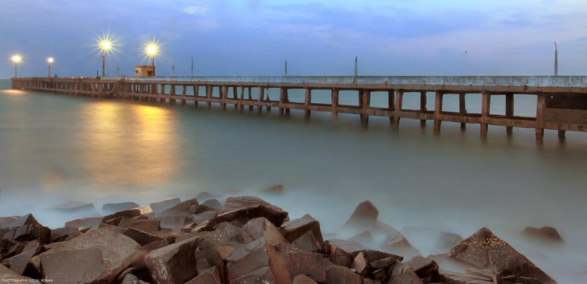
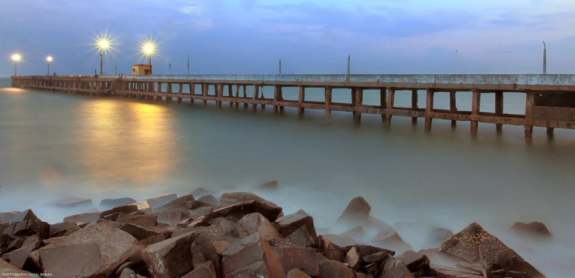

-769332.jpg)
About Pondicherry
Pondicherry, recently renamed as Puducherry, is a town tucked away on the Eastern seaboard of India. Among its diverse attractions are a coastline of 32 kms, palm-fringed beaches, backwaters, fishing villages, beach resorts, the Sri Aurobindo Ashram, the international city of Auroville, the French boulevard town with its French heritage, and so on. Some great food, some fine wine, and a great adventure await you here.
Read More
Whats Special?
For those coming to Pondicherry expecting a Goa-like place there is likely to be a great deal of disappointment. Unlike Goa, Pondicherry does not have a commercial infrastructure to entertain tourists. Pondicherry is a great place to look around, take a walk by the sea, attend a cultural program.
The Pondicherry tourism department uses the punch-line "Give time a break" for their advertisement campaign. And that is indeed one of the more attractive features of this city. So relax, put your feet up, switch off your cell phone, and forget all about returning to work on Monday morning. Enjoy a fine meal with a glass of wine, rent a bicycle and take a ride at the promenade, take a walk in the park. Do something new an interesting that you wouldn't do in the city you live in. Learn some pottery at the Golden Bridge Pottery.
You can also do some serious meditation at the Auroville, the Sri Aurobindo Ashram. Or you could visit Aurovilleto watch a cultural event such as a dance organized there by the Auroville Cultural Exchange. You can also go fishing in a Kattaraman- fishing raft of sorts.